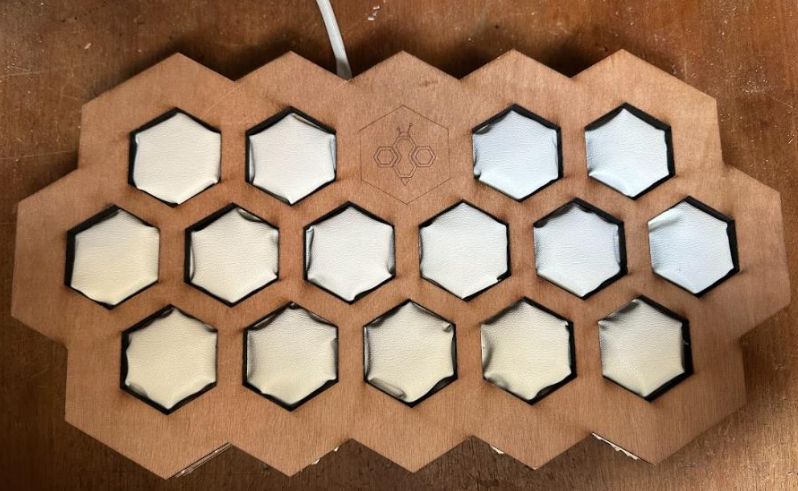

BeeThirsty
BeeThirsty is a cocktail machine which conciles drinking and entertainement.
The machine itself makes customizable cocktails at the push of a button, and it's add-ons bring fun to the table!
Add-Ons:
BeeArtsy
This add-on consists of a keyboard which plugs into the main Hive, with each button pushed a sound is played and a specific liquid is poured. This is a modern take on Boris Vian's Pianocktail
BeeBuzzed
This add-on is basically a dumb drinking game.
Each player holds a handle in one hand, and has a shot in front of him on the BeeBuzzed board
The last player to drink his shot receives an electric shock through the handle
Technical Details
The Hive is controlled with a raspberry pi 4, the whole gui and backend is coded in python.
There is a homemade PCB that controls the 15 pumps by demuxing the signal since the raspberry doesnt have enough GPIOs
The add-ons are powered by arduino nanos which communicate with the hive via I²C